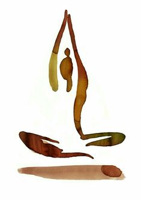

| Йога Namaste! |
 |
|
| Съдържание: Начало |
Здравейте и Намасте! Добре дошли в
сайта, в който можете да намерите повечето от нещата
свързани с йогата, за които се интересувате! Това е
образователен сайт, свързан с една от най- древните
практики в Източна Азия, по- точно в Индия. Всеки ден
очаквайте нови и нови факти по темата! А сега изваждайте
постелките и нека се впуснем в едно йогийско приключение
заедно! 👌👌 Оммм 👌👌
|
|